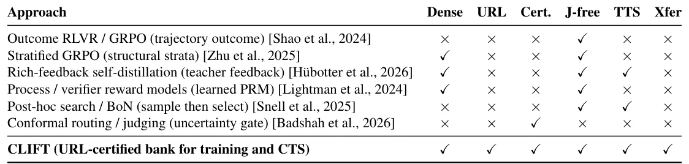
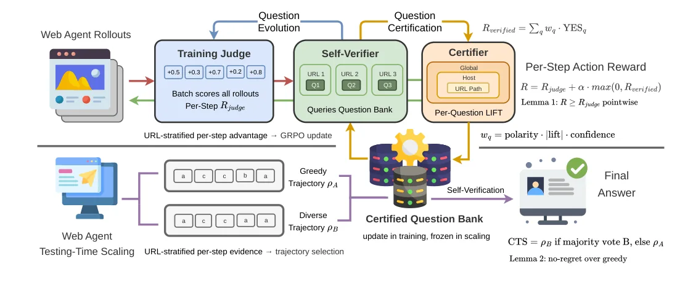
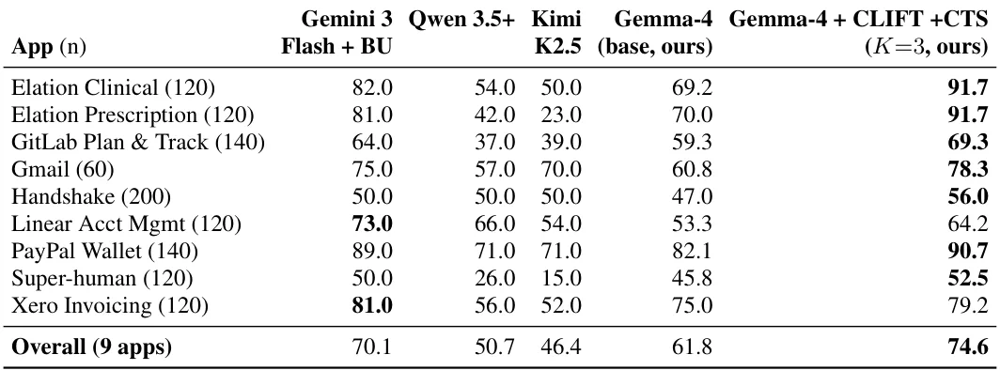
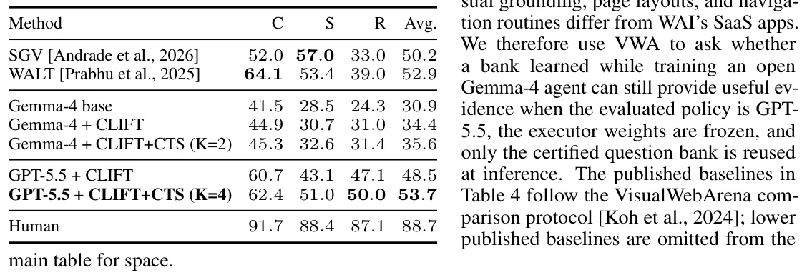

O problema: feedback denso é caro, feedback binário é esparso demais
Agentes web de código aberto já conseguem executar tarefas realistas em navegadores: clicar em botões, preencher formulários, navegar entre páginas. Mas treinar esses agentes com aprendizado por reforço ainda esbarra em um dilema de supervisão. De um lado, você pode usar um sinal binário de sucesso — a tarefa foi concluída ou não. Esse sinal é fácil de obter, mas esparso demais para atribuir crédito: quando todos os rollouts de um grupo GRPO recebem o mesmo resultado final, a estimativa de vantagem colapsa e o gradiente perde força.
Do outro lado, você pode chamar um modelo de linguagem de fronteira como juiz, pedindo que ele avalie cada passo da trajetória. Isso gera feedback denso, mas é caro durante o treinamento e não pode ser assumido disponível na hora do deploy. Benchmarks de agentes web refletem essa tensão: WebArena Infinity usa verificadores programáticos por aplicação, VisualWebArena usa checagens de URL e DOM baseadas em resultado, e suítes de web ao vivo como Online Mind2Web dependem de juízes LLM ruidosos.
O paper CLIFT, da Salesforce AI Research, pergunta: e se o feedback do juiz pudesse ser transformado em um verificador reutilizável que o agente carrega consigo? Em vez de treinar um modelo de recompensa de processo separado ou aplicar best-of-N pós-hoc, CLIFT mantém um banco de perguntas de verificação em linguagem natural sobre o comportamento do agente e certifica quais perguntas são confiáveis em quais estados de URL. Esse mesmo banco é usado em dois lugares: durante o treinamento, para densificar a recompensa por passo; e em tempo de teste, para selecionar trajetórias sem chamar o juiz externo.

A ideia central: perguntas certificadas como interface entre juiz e agente
A intuição de CLIFT é simples: em vez de descartar o feedback do juiz após o treinamento, converta-o em um artefato durável. Esse artefato é um banco de perguntas de verificação em linguagem natural, cada uma associada a um escopo de URL, uma polaridade (YES indica progresso ou falha?) e um peso de confiança. Durante o treinamento, o agente responde essas perguntas sobre seus próprios rollouts. Um Compositional Conformal Certifier (CCC) mantém apenas os sinais de perguntas cuja evidência condicional à URL concorda com o juiz de treinamento, atribui pesos de confiança através de lift consciente de polaridade, e mistura o score do verificador resultante nas recompensas por passo de forma que nunca subtraia da linha de base do juiz.
Em tempo de teste, o mesmo banco certificado é congelado e reutilizado como evidência estruturada para Conformal Trajectory Selection (CTS): o agente amostra um rollout ganancioso e uma ou mais tentativas diversas, o auto-verificador resume cada traço de URL, e uma regra conservadora de voto majoritário escolhe se deve trocar a trajetória atual sem chamar nenhum juiz externo. Esse mecanismo único suporta três cenários: treinar um modelo aberto, transferir o banco para um modelo fechado mais forte, e recalibrar o banco para avaliação zero-shot em web ao vivo.
Como funciona: certificação conformal de perguntas por URL
O coração de CLIFT é o Compositional Conformal Certifier. Cada pergunta de verificação carrega um escopo de URL e um sinal de polaridade indicando se YES é evidência de progresso ou de falha. Um rastreador conformal adaptativo Mondrian estima se aquela pergunta separa rollouts de alto e baixo score do juiz na granularidade de URL relevante. Perguntas certificadas recebem pesos de confiança assinados.
Durante o treinamento, isso produz uma recompensa de verificador que só pode adicionar evidência em cima da linha de base do juiz, prevenindo o colapso de recompensa que aflige misturas lineares ingênuas. Durante o escalamento em tempo de teste, a mesma evidência assinada é congelada e apresentada a um seletor comparativo sobre duas trajetórias completas. Em ambos os casos, o banco de perguntas é uma interface compacta entre feedback caro do juiz e os próprios rollouts do agente.
O método é uma variante da família GRPO de gradiente de política, mas muda como rollouts são pontuados e reutilizados. Em vez de transmitir uma recompensa escalar de trajetória, CLIFT pontua cada URL visitada com perguntas de verificação e herda o score de URL para as ações tomadas ali. Isso permite vantagens estratificadas por URL: quando o agente visita a mesma página em múltiplos rollouts, a estimativa de vantagem compara ações dentro daquele estrato de URL, em vez de colapsar para zero quando todos os rollouts terminam com o mesmo resultado final.

Três cenários de avaliação, um único banco de perguntas
Os autores avaliam CLIFT em três benchmarks complementares, cada um testando uma propriedade diferente do banco certificado. No WebArena Infinity (WAI), onde verificadores programáticos fornecem supervisão densa de treinamento, CLIFT melhora um agente Gemma-4 treinável e alcança o score público mais forte de 9 aplicações de que os autores têm conhecimento. O ponto aqui é tanto o treinamento quanto o CTS no mesmo backbone aberto.
No VisualWebArena (VWA), onde a avaliação é mais baseada em resultado, os autores usam o banco criado durante o treinamento do Gemma-4 como um verificador em tempo de teste para GPT-5.5, mostrando que o conhecimento de verificação aprendido transfere para um backbone fechado mais forte e alcança desempenho estado-da-arte sob o harness canônico. Isso demonstra que o banco não é específico do modelo: ele captura padrões de verificação que generalizam.
No Online Mind2Web (OM2W), os autores empurram a transferência ainda mais longe: nenhum agente é treinado em OM2W; em vez disso, o banco de perguntas certificado é traduzido e recalibrado, depois usado pelo CTS para melhorar o escalamento em tempo de teste na web ao vivo. Essas três histórias suportam a mesma afirmação: verificação conformal auto-supervisionada é útil tanto como sinal de treinamento quanto como sinal de escalamento em tempo de teste reutilizável e livre de juiz.
Resultados: estado-da-arte em WAI, transferência em VWA, zero-shot em OM2W
No WebArena Infinity, CLIFT com Conformal Trajectory Selection (K=3 rollouts por tarefa) atinge 74,6% de taxa de sucesso no conjunto de comparação público de 9 aplicações. Esse resultado supera modelos anteriores e representa o melhor desempenho de código aberto reportado no paper. O ganho vem tanto do treinamento com recompensas densificadas quanto da seleção conservadora de trajetórias em tempo de teste.
No VisualWebArena, o banco de perguntas treinado com Gemma-4 é transferido para GPT-5.5 em tempo de teste. Com CTS, o agente alcança 53,7% de taxa de sucesso média ponderada por tamanho de ambiente, atingindo desempenho estado-da-arte sob o harness canônico. Isso mostra que o banco captura conhecimento de verificação independente do backbone: um modelo mais forte pode reutilizar as perguntas certificadas sem retraining.
No Online Mind2Web, os autores não treinam um agente no benchmark. Em vez disso, traduzem o banco de perguntas certificado e o recalibram para o domínio de web ao vivo. O CTS melhora um agente de web ao vivo em avaliação zero-shot, demonstrando que o banco pode ser adaptado para novos domínios sem fine-tuning de política. Juntos, esses resultados posicionam verificação conformal auto-supervisionada como uma forma de transformar feedback caro de juiz em um sinal de treinamento reutilizável e um sinal de escalamento em tempo de teste livre de juiz.


Por que certificação conformal, e não apenas mais perguntas?
A tentação óbvia seria simplesmente fazer o agente responder muitas perguntas de verificação e usar as respostas como recompensa. O problema é que nem todas as perguntas são informativas em todos os contextos. Uma pergunta como 'o agente clicou no botão correto?' pode ser útil em uma página de checkout, mas ruidosa em uma página de busca onde múltiplos cliques são válidos. Sem certificação, você acaba amplificando ruído e colapsando a recompensa.
A certificação conformal resolve isso estimando, para cada pergunta e escopo de URL, se aquela pergunta realmente separa rollouts bons de ruins segundo o juiz. O rastreador Mondrian adaptativo mantém estatísticas por camada de URL e só atribui peso de confiança a perguntas cujo lift observado supera um limiar calibrado. Isso torna o banco auto-corretivo: perguntas que param de funcionar em uma nova distribuição perdem peso automaticamente, em vez de poluir o sinal.
A polaridade assinada é igualmente importante. Uma pergunta pode indicar progresso (YES é bom) ou detecção de erro (YES é ruim). CLIFT rastreia a polaridade e usa lift assinado: perguntas positivas adicionam recompensa quando respondidas YES, perguntas negativas adicionam recompensa quando respondidas NO. Isso permite que o banco capture tanto objetivos de progresso quanto armadilhas a evitar, sem confundir os dois.
Conformal Trajectory Selection: escalamento em tempo de teste sem juiz
Em tempo de teste, CLIFT congela o banco certificado e o usa para Conformal Trajectory Selection. O agente amostra K trajetórias por tarefa: uma gananciosa e K-1 tentativas diversas. O auto-verificador resume cada traço de URL com as perguntas certificadas, produzindo um score de verificador por trajetória. Uma regra conservadora de voto majoritário decide se deve trocar a trajetória gananciosa por uma das tentativas diversas.
A regra é conservadora por design: só troca se a evidência do verificador for suficientemente forte. Isso evita trocar para uma trajetória pior por ruído. O CTS não chama nenhum juiz externo, tornando-o adequado para deploy em produção onde o juiz de fronteira não está disponível ou é caro demais para chamar em cada tarefa.
O ganho de CTS varia por benchmark. No WAI, onde o agente foi treinado com CLIFT, CTS adiciona alguns pontos percentuais sobre o rollout ganancioso sozinho. No VWA, onde o backbone é GPT-5.5 e não foi treinado com CLIFT, o ganho é maior porque o banco fornece conhecimento de verificação que o modelo não internalizou durante o treinamento. Isso sugere que CTS é especialmente valioso quando o banco e o backbone não foram co-treinados.
O que fica em aberto
O paper demonstra que um banco de perguntas certificado pode ser reutilizado entre modelos e benchmarks, mas não explora até onde essa transferência pode ir. E se o benchmark de teste usar aplicações completamente diferentes? E se a estrutura de URL for radicalmente diferente? Os autores mostram recalibração em OM2W, mas não quantificam quanta sobreposição de domínio é necessária para que a transferência funcione.
Outra questão em aberto é a evolução do banco. O paper menciona que perguntas podem ser adicionadas durante o treinamento, mas não detalha como o banco cresce ou encolhe ao longo do tempo. Existe um risco de o banco crescer indefinidamente? Como você remove perguntas obsoletas? E como você atualiza o banco quando um juiz mais forte fica disponível, sem descartar o que juízes anteriores ensinaram?
Finalmente, o custo de inferência do CTS não é analisado em detalhe. Amostrar K trajetórias e avaliar cada uma com o banco de perguntas é mais barato do que chamar um juiz de fronteira, mas ainda é mais caro do que um rollout ganancioso único. O paper não fornece números de latência ou custo, tornando difícil avaliar o trade-off em cenários de produção.
Por que isso importa
CLIFT mostra que feedback de juiz não precisa ser descartado após o treinamento. Convertendo esse feedback em um banco de perguntas certificado, você cria um artefato que pode ser inspecionado, auditado, transferido entre modelos e reutilizado em tempo de teste sem chamar o juiz novamente. Isso muda a economia de treinar agentes: em vez de pagar pelo juiz em cada passo de cada rollout de cada tarefa de teste, você paga uma vez durante o treinamento e depois carrega o banco com o agente.
A transferência entre backbones é especialmente interessante. O fato de que um banco treinado com Gemma-4 melhora GPT-5.5 no VWA sugere que o banco captura padrões de verificação que não são específicos do modelo. Isso abre a possibilidade de bancos de perguntas como artefatos compartilháveis: uma comunidade poderia manter um banco certificado para um domínio, e qualquer agente novo poderia reutilizá-lo para escalamento em tempo de teste.
Para desenvolvedores de agentes, CLIFT oferece uma alternativa ao dilema entre feedback binário esparso e juízes caros. Se você tem acesso a um juiz forte durante o desenvolvimento, pode usá-lo para criar um banco certificado e depois embarcar esse banco com o agente em produção. O banco não substitui completamente o juiz — você ainda precisa dele para criar o banco inicial — mas torna o juiz um custo de desenvolvimento, não um custo de inferência.
O que fica
- CLIFT converte feedback caro de juiz em um banco de perguntas certificado, usado tanto para densificar recompensas no treinamento quanto para seleção de trajetórias em tempo de teste sem chamar o juiz.
- O banco transfere entre modelos: perguntas certificadas com Gemma-4 melhoram GPT-5.5 no VisualWebArena, atingindo desempenho estado-da-arte sob o harness canônico.
- Certificação conformal por URL impede que perguntas ruidosas poluam o sinal: apenas perguntas cujo lift observado concorda com o juiz recebem peso de confiança.
- O método atinge 74,6% de sucesso no WebArena Infinity e melhora agentes em avaliação zero-shot no Online Mind2Web, mostrando que o banco é reutilizável entre benchmarks e domínios.
Paper original: CLIFT: Conformal Self-Verification for Web Agent Training and Test-Time Scaling
Comentários
Nenhum comentário ainda. Seja o primeiro.